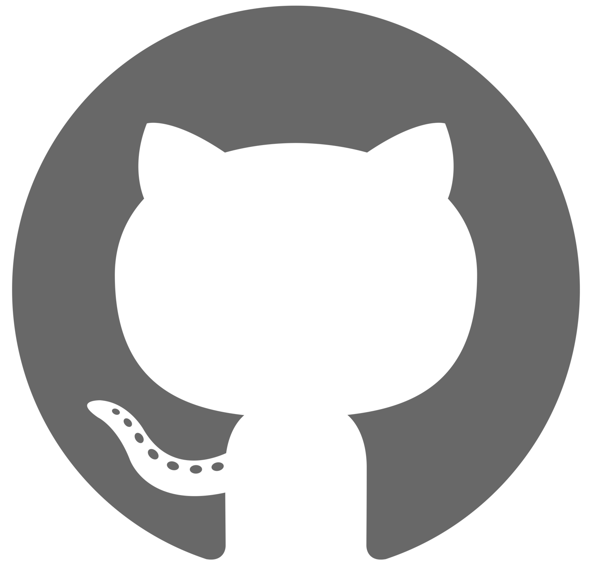

As "not so underpaid" researcher...
.pdf .bib code Yue Feng, Yunlong Jiao, Animesh Prasad, Nikolaos Aletras, Emine Yilmaz, Gabriella Kazai:
Schema-Guided User Satisfaction Modeling for Task-Oriented Dialogues. ACL (1) 2023: to appear
.pdf .bib Carolina Cuesta-Lazaro, Animesh Prasad, Trevor Wood: What does the sea say to the shore? A BERT based DST style approach for speaker to dialogue attribution in novels. ACL (1) 2022: 5820-5829
.pdf .bib Mateusz Lajszczak, Animesh Prasad, Arent van Korlaar, Bajibabu Bollepalli, Antonio Bonafonte, Arnaud Joly, Marco Nicolis, Alexis Moinet, Thomas Drugman, Trevor Wood, Elena Sokolova: Distribution augmentation for low-resource expressive text-to-speech. ICASSP 2022: 8307-8311
As "underpaid" graduate student...
.pdf .bib code Akshay Bhola, Kishaloy Halder, Animesh Prasad, Min-Yen Kan: Retrieving Skills from Job Descriptions: A Language Model Based Extreme Multi-label Classification Framework. COLING 2020: 5832-5842
.pdf .bib Animesh Prasad, Hervé Déjean, Jean-Luc Meunier: Versatile Layout Understanding via Conjugate Graph. ICDAR 2019: 287-294
.pdf .bib code Animesh Prasad, Min-Yen Kan: Glocal: Incorporating Global Information in Local Convolution for Keyphrase Extraction. NAACL-HLT (1) 2019: 1837-1846
.pdf .bib code Animesh Prasad, Chenglei Si, Min-Yen Kan: Dataset Mention Extraction and Classification. ESSP@NAACL-HLT 2019: 31-36
.pdf .bib code Animesh Prasad, Saumya Ahuja, Shenhao Jiang, Bimlesh Wadhwa, Min-Yen Kan: ChairVisE: An analytic lens for conference submission data. JCDL 2019: 428-429
.pdf .bib code Xuan Su, Animesh Prasad, Min-Yen Kan, Kazunari Sugiyama: Neural Multi-Task Learning for Citation Function and Provenance. JCDL 2019: 394-395
.pdf .bib code Shenhao Jiang, Animesh Prasad, Min-Yen Kan, Kazunari Sugiyama: Identifying Emergent Research Trends by Key Authors and Phrases. COLING 2018: 259-269
.pdf .bib code Animesh Prasad, Manpreet Kaur, Min-Yen Kan: Neural ParsCit: A Deep Learning Based Reference String Parser. Int. J. on Digital Libraries 19(4): 323-337 (2018)
.pdf .bib code Animesh Prasad: WING-NUS at CL-SciSumm 2017: Learning from Syntactic and Semantic Similarity for Citation Contextualization. BIRNDL@SIGIR (2) 2017: 26-32
.pdf .bib code Animesh Prasad, Min-Yen Kan: WING-NUS at SemEval-2017 Task 10: Keyphrase Identification and Classification as Joint Sequence Labeling. SemEval@ACL 2017: 973-977
.pdf .bib Animesh Prasad, Khe Chai Sim: Microphone Distance Adaptation Using Cluster Adaptive Training for Robust Far Field Speech Recognition. INTERSPEECH 2016: 3823-3827
From another life...
link .bib Shailendra Shukla, Rajiv Misra, Animesh Prasad: Efficient disjoint boundary detection algorithm for surveillance capable WSNs. J. Parallel Distrib. Comput. 109: 245-257 (2017)
Keep in Touch
